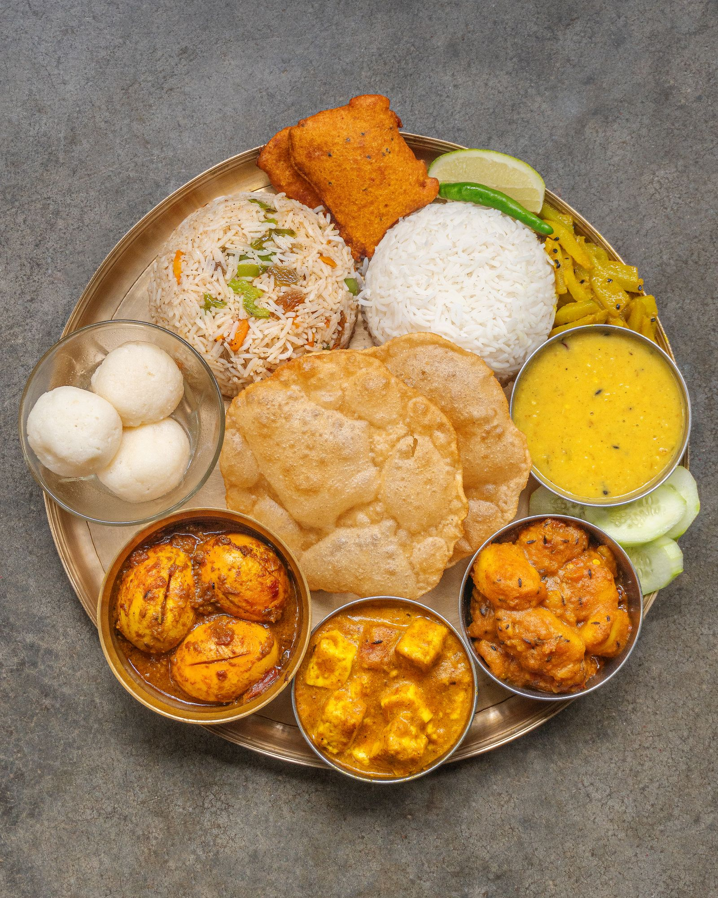

01योग


Anamaya is a sanctuary for wellness, tranquility and a life lived with purpose — the practice of conscious living through yoga, meditation, healing and naturopathy, in the Aravalli foothills of Jaipur. This is an invitation to pause and re-establish connection.

स्वागतम् · Welcome
In Sanskrit, anāmaya (अनामय) is one of the oldest words for health — literally, “free from illness.” We took the word as a promise: that wellness is not something added to you, but something uncovered within you.
Set amid gardens in the Aravalli foothills, Anamaya brings four streams of practice under one roof — yoga, meditation, healing and naturopathy — woven into personal programs that meet you exactly where you are.
The Four Streams
Every program at Anamaya draws on these four practices, blended to your constitution, your season of life, and your intention.

Guided sitting, pranayama, yoga nidra and sound baths that quiet the mind and steady the nervous system.


Drugless nature-cure built on the five elements — mud, hydro, sun, air and fasting therapies with food as medicine.
“Anamaya — where the journey to well-being commences internally. An invitation to pause, and to re-establish connection.”— The Anamaya intention

Daily Rhythm
Retreat days follow the sun, not the clock. This is the gentle spine of a residential day — every element optional, every pause encouraged.
Breath before thought, as the hills lighten.
Hatha or therapeutic practice, all levels.
Kitchen-garden cooking on brass thalis.
Mud, hydro, massage and consultations.
Garden paths, hammocks, herb beds.
Yin yoga, yoga nidra or a sound bath.
Herbal tea and early, deep rest.
Retreats & Stays
A single unhurried day: sunrise practice, a naturopathy consult, one therapy, sattvic meals and an evening sound bath.
₹3,500 / person · illustrative
A weekend reset — daily yoga and meditation, two nature-cure therapies, diet consultation and plenty of hammock time.
₹18,500 / person · illustrative
The full arc: personal program, daily one-to-ones, five-element therapies, silence hours and a closing fire ceremony.
₹42,000 / person · illustrative
Guest Voices
Journal
Why the oldest Sanskrit word for health — anāmaya, “free from illness” — describes a subtraction rather than an addition.
On brahma muhurta, cool air, quiet minds — and what the first light does to a breath practice in the shala.
Begin Here
Write to us, or come for a day. The rest — the pause, the breath, the return to yourself — takes care of itself.